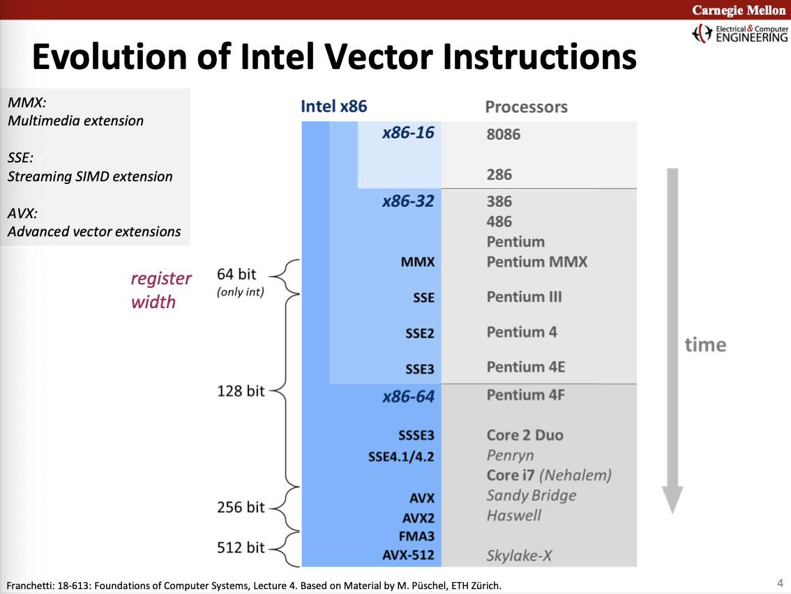
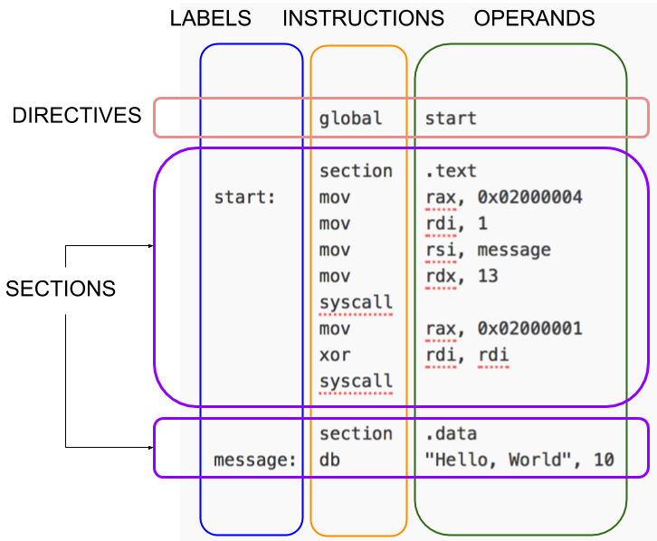

Preface
run.sh:
nasm -f macho64 $1.asm && \
ld -L /Library/Developer/CommandLineTools/SDKs/MacOSX.sdk/usr/lib \
-lSystem \
-macosx_version_min 10.12 \
-no_pie \
$1.o && \
./a.out
Run with
./run.sh 02-syscall
Others:
Registers for syscall arguments: rdi, rsi, rdx, rcx, r8, r9 https://en.wikipedia.org/wiki/X86_calling_conventions#x86-64_Calling_Conventions
Resources
https://cs.lmu.edu/~ray/notes/nasmtutorial/ https://cs.brown.edu/courses/cs033/docs/guides/x64_cheatsheet.pdf
Instructions
https://www.cs.virginia.edu/~evans/cs216/guides/x86.html
**Registers**
----------------------------------------
| register 1 | register 2 | register 3 |
----------------------------------------
**Memory**
--------------
Address 0x1070 | <contents> |
Address 0x1071 | <contents> |
Address 0x1072 | <contents> |
Address 0x1073 | <contents> |
--------------
| Register | EAX, AX, EBP | |
| Constant | 0x13 | |
| Memory address | [eax], [var+4], dword ptr [eax+ebx] |
var — location ~ &var
[var] — value at location var ~ *var
mov
push <operand>
- Decrements ESP by 4 (stack grows from high address to low address)
goes into ESP
push S push Source onto stack
mov D,S move Source to Destination
pop D pop top of stack into Destination
push
xorl A,B zeroing
leaq S,D load effective address; load address of S in D
inc dec neg not
pushq %rbp
= subq $8, %rsp
mov %rbp, (%rsp)
https://stackoverflow.com/questions/4584089/what-is-the-function-of-the-push-pop-instructions-used-on-registers-in-x86-ass
SIMD instructions
https://software.intel.com/sites/landingpage/IntrinsicsGuide/
Intel vector instruction sets

Data types
mm<output-data-type><op><suffix>_<prefix><data-type>
https://software.intel.com/content/www/us/en/develop/documentation/cpp-compiler-developer-guide-and-reference/top/compiler-reference/intrinsics/naming-and-usage-syntax.html
<suffix>
-
- u (unaligned)
- 1 (?)
- zero (clear)
- r (reversed)
- l (memory)
<prefix>
- p (packed i.e. vector)
- s (scalar)
data-type
- __m128
- __m256
- __m512
- __m128d
- __m256d
- __m512d
- __m128i
- __m256i
- __m512i
__m128 = a register that can take 4 floats (32)
__m128d = a register that can take 2 doubles (64)
__m128i = a register that can take 4 ints (32)
__m256 = a register that can take 8 floats (32)
__m256d = a register that can take 4 doubles (64)
__m256i = a register that can take 8 ints (32)
__m512 = a register that can take 16 floats (32)
__m512d = a register that can take 8 doubles (64)
__m512i = a register that can take 16 ints (32)
Registers
Internal memory storage location. Nearly all computer load data from main memory into registers in order to perform computations
- General register
- Data register
- Pointer register
- Index register
- Control register
- Segment register
Operands can be
- Immediate values eg. ``
$0x5 - Registers eg.
%eax - Memory address eg.
%rbp - Labels (?)
8 4 2 1
%rax %eax %ax %al accumulator
%rbx %ebx %bx %bl base
%rcx %ecx %cx %cl counter
%rdx %edx %dx %dl data
%rsi %esi %si %sil source idx. function param
%rdi %edi %di %dil dest idx. function param
%rbp %eax %ax %al base pointer
%rsp %eax %ax %al stack pointer
%r8 %eax %ax %al function param
%r9 %eax %ax %al function param
%r10 %eax %ax %al
%r11 %eax %ax %al
%r12 %eax %ax %al
%r13 %eax %ax %al
%r14 %eax %ax %al
%r15 %eax %ax %al
Other registers
%rip instruction pointer
Note: %rbp always has a higher value than %rsp because the stack starts at a high memory address and grows downwards.
Suffixes for instructions
b = byte = 8 bits
w = word = 16 bits = 1 byte
l = long = 32 bits = 4 bytes
q = quadword = 64 bits = 8 bytes
t = ten bytes = 80 bits = 80 bytes
Syntax
Instruction
Move value 4 to register rax
Intel
mov rax, 4
AT&T
mov $4, %rax
Referencing
Memory address
Intel
rax
AT&T
%rax
Dereferencing
Value at memory address
Intel
[rax]
AT&T
(%rax)
Addressing memory
mov eax, [ebx] ; move the 4 bytes in memory at address contained in EBX
Anatomy of assembly program
- Text section: program
- Data section: declare constants and data which won’t change at runtime.
- Bss section: for variables not yet declared
Assembly statements ⁃ executable instructions/ instructions: tell the processor what to do. Each instruction generates one machine language instruction ⁃ assembler directives or pseudo-ops ⁃ macros: text substitution mechanism

Hello world
; Registers for syscall arguments: rdi, rsi, rdx, rcx, r8, r9
; https://en.wikipedia.org/wiki/X86_calling_conventions#x86-64_Calling_Conventions
global _main
section .text ; program
_main:
mov rax, 0x02000004 ; system call for write
mov rdi, 1 ; arg1 - 1 = stdout
mov rsi, message ; arg2 - address of string to output
mov rdx, 13 ; arg3 - number of bytes
syscall ; invoke operating system
mov rax, 0x02000001 ; system call for exit
mov rdi, 0 ; arg1 - exit code 0
syscall ; invoke operating system
section .data
message:
db "Hello, World", 0 ; 0 represents the newline at the end
syscall
global _main
section .text ; program
_main:
mov rax, 0x02000003 ; system call for read
mov rdi, 0 ; arg1 - 0 = stdin
mov rsi, num1 ; arg2 - address of string to output
mov rdx, 4 ; arg3 - number of bytes
syscall ; invoke
mov rax, 0x02000004 ; system call for write
mov rdi, 1 ; arg1 - 1 = stdout
; arg2 - address of string to output
mov rdx, 4 ; arg3 - number of bytes
syscall ; invoke
mov rax, 0x02000001 ; system call for exit
mov rdi, 0 ; arg1 - exit code 0
syscall ; invoke
section .data
message:
db "Hello, World", 0 ; 0 represents \0
section .bss
num1 resb 4 ; reserve 4 bytes
equ
SYS_READ equ 0x02000003
SYS_WRITE equ 0x02000004
SYS_EXIT equ 0x02000001
global _main
section .text ; program
_main:
mov rax, SYS_READ ; system call for read
mov rdi, 0 ; arg1 - 0 = stdin
mov rsi, num1 ; arg2 - address of string to output
mov rdx, 4 ; arg3 - number of bytes
syscall ; invoke
mov rax, SYS_WRITE ; system call for write
mov rdi, 1 ; arg1 - 1 = stdout
; arg2 - address of string to output
mov rdx, 4 ; arg3 - number of bytes
syscall ; invoke
mov rax, SYS_EXIT ; system call for exit
mov rdi, 0 ; arg1 - exit code 0
syscall ; invoke
section .data
message:
db "Hello, World", 0 ; 0 represents \0
section .bss
num1 resb 4 ; reserve 4 bytes
inc and labels
global _main
section .text
_main:
mov rdx, output ; rdx holds address of next byte to write
firststar:
mov word [rdx], '*' ; write single star
inc rdx ; advance pointer to next cell to write
secondstar:
mov word [rdx], '*' ; write single star
inc rdx ; advance pointer to next cell to write
thirdstar:
mov byte [rdx], '*' ; write single star
inc rdx ; advance pointer to next cell to write
fourstar:
mov byte [rdx], '*' ; write single star
inc rdx ; advance pointer to next cell to write
newline:
mov byte [rdx], 10 ; new line
inc rdx ; advance pointer to next cell to write
done:
mov rax, 0x02000004
mov rdi, 1
mov rsi, output
mov rdx, dataSize
syscall
mov rax, 0x02000001 ; system call for exit
xor rdi, rdi ; exit code 0
syscall ; invoke operating system to exit
section .bss
dataSize equ 5
output: resb dataSize
jmp and cmp
global _main
section .text
_main:
mov rdx, output ; rdx holds address of next byte to write
mov r8, 0 ; r8 holds the number of stars
writeStar:
mov byte [rdx], '*' ; write single star
inc rdx ; advance pointer to next cell to write
inc r8 ; increment number of stars
cmp r8, stars ; is the number of stars equals what we want?
jne writeStar ; if not, go back to the beginning
newline:
mov byte [rdx], 10 ; new line
inc rdx ; advance pointer to next cell to write
done:
mov rax, 0x02000004
mov rdi, 1
mov rsi, output
mov rdx, dataSize
syscall
mov rax, 0x02000001 ; system call for exit
xor rdi, rdi ; exit code 0
syscall ; invoke operating system to exit
section .bss
stars equ 4
dataSize equ 5
output: resb dataSize